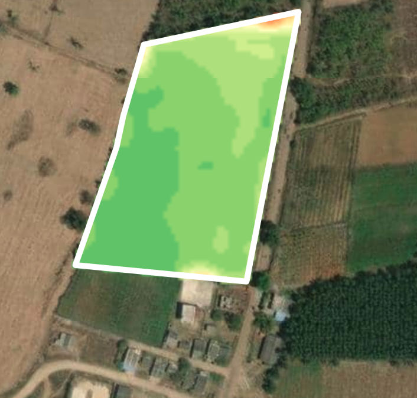
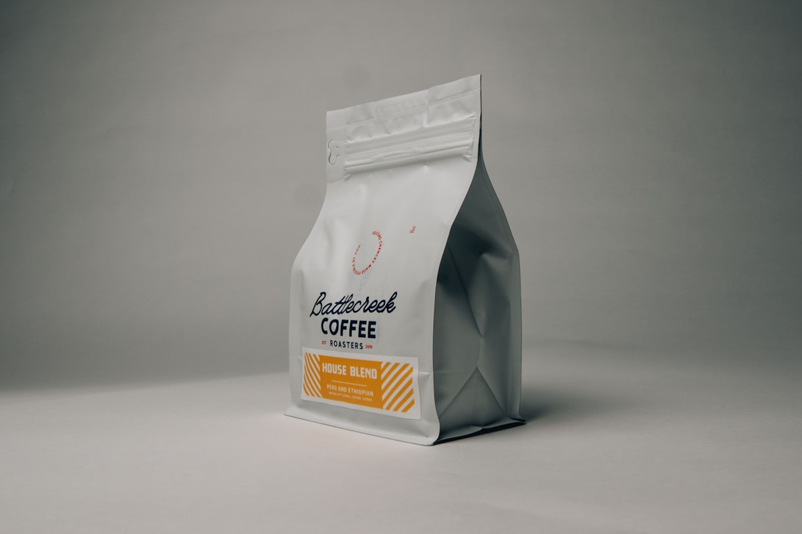

Secure product intelligence link
Step 2 · Farm Intelligence
India → Karnataka → Kodagu → Farm 147. The importer sees a verified digital twin—not a spreadsheet.

Reliability score
%
Consistent Plantation A/AA quality across five seasons.
Step 3 · Growing Season
Satellite, rainfall, temperature, humidity, and vegetation index—assembled into a living crop profile before harvest.
Current crop health
95%
Dense canopy across verified plot
Expected harvest
2.4 MT
Farm contribution to SHIP-2026-00081
Risk
Low
0 disease alerts · 0 risk events
NDVI values split ·

Weather & field activity

| Day | Max/Min | Precip | RH | Clouds | Wind |
|---|
Step 4 · Harvest
Mobile capture recorded GPS, time, farmer, field, photos, weight, and moisture—no manual typing.

AI evaluation
Premium Export
Export quality: Excellent · Expected specialty grade: High · Moisture 11.2%
Steps 5–6 · Transport & Processing
Truck telemetry and plant machines publish automatically. Continental adds the value that wins European buyers.
Transport
Farm 147 · 12 Jan 2026 · 07:42 IST
Driver Suresh N. · Dep 14:18 · Arr 18:05 · 24°C / 62% RH
Continental Coffee — Kushalnagar
Processing · Machine Line 3
Step 7 · Laboratory
Instruments upload results. AI translates lab noise into an EU acceptance decision.
AI decision
Approve
EU acceptance 99% · Rejection 0.8% · Expected shelf life 14 months
Grade
Washed Arabica · Premium export path
Steps 8–9 · Packaging & Warehouse
Bag → batch → pallet → container. Warehouse sensors keep quality locked before export.
Packaging
Warehouse
Storage AI
Stable
Humidity within band. No move required. Quality path clear for stuffing.
Steps 10–11 · Container & Ocean
IoT every 30 minutes. AI explains position, ETA, congestion, and quality risk—not just a pin on a map.
Container MSCU8842191
Ocean AI
Arabian Sea
Vessel MSC Amalfi · Chennai → Hamburg · ETA 11 days · Port congestion Low · Quality risk None · Maintain current route
Step 12 · Customs
No email attachments. AI verifies batch numbers, quantities, dates, and certificates in one place.
AI verification
Matched
Step 13 · Importer receives coffee
Not PDFs—an intelligence view with a clear recommendation for the European roaster.
AI recommendation
Accept Shipment
Processor Continental Coffee · Processing date verified · Farm 147 evidence complete
Six months later
NIVI doesn’t guess—it analyzes years of shipment evidence.
Long-term recommendation
Increase annual contract by 30%
Accumulated intelligence across farm, processing, lab, and voyage performance—not a one-off certificate.